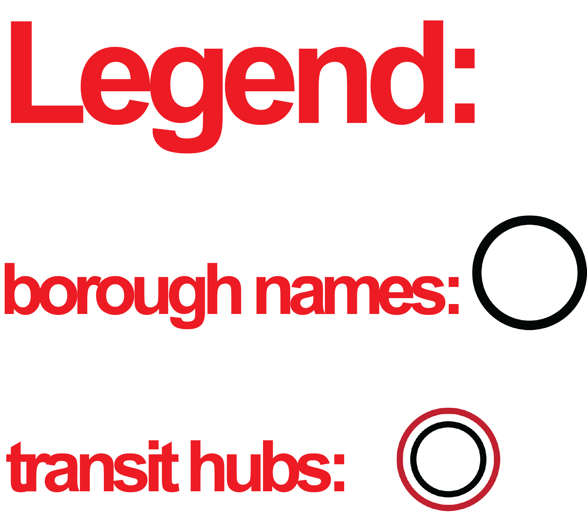

<!DOCTYPE html>
<html lang="en">
<head>
    <meta charset="UTF-8">
    <meta name="viewport" content="width=device-width, initial-scale=1.0">
    <title>NYC TRANSIT MAP</title>

    <!--leaflet css-->
    <link rel="stylesheet" href="https://unpkg.com/leaflet@1.9.4/dist/leaflet.css" />


    <style> 
        body {
            margin: 0;
            padding: 0;
       font-family: Arial, Helvetica, sans-serif; 
        
        
        }
        
        #map {
             width: 100%;
             height: 700px;
             margin-top: 100px;
             margin-bottom: 100px;

        }

        #legend {
            position: absolute;
            bottom: 0;
            right: 0;
        
        }

     </style>

</head>
<body>
<div id="map">
</div>  
    <script>


    </script>
    
</body>


</html>

<!--leaflet js-->
<script src="https://unpkg.com/leaflet@1.9.4/dist/leaflet.js"></script>
<script src="BOROUGH.js"></script>
<script src="brooklyn.js"></script>
<script src="bronx.js"></script>
<script src="queens.js"></script>
<script src="manhattan.js"></script>
<script src="https://unpkg.com/leaflet@1.0.3/dist/leaflet.js"></script>
<script src="proj4.js"></script>
<script src="proj4leaflet.js"></script>
<script src="logog.png"></script>
<script src="Subway_Stations.js"></script>
<script src="ICON2.png"></script>

<script>
    // Map Intialization
    var map = L.map('map').setView([40.7128, -74.0060], 13);
    var icon3 = L.icon({
        iconUrl: 'ICON2.png',
        iconSize: [10,10],
    })
    var stations =L.geoJSON(stations, {
        pointToLayer: function(feature,latlng){
            return L.marker(latlng,{icon:icon3});
        }
    }).addTo(map);
    
    var SI_color = {
        color: "black",
        fillColor: "red",
        fillOpacity: 0.2
    }
    var STATENISLAND = L.geoJSON(BOROUGH, {style: SI_color}).bindPopup('Staten Island, NYC').addTo(map);
    var BK_color = {
        color: "black",
        fillColor: "green",
        fillOpacity: 0.2
    }
    var BROOKLYN = L.geoJSON(brooklyn, {style: BK_color}).bindPopup('Brooklyn, NYC').addTo(map);
    var BX_color = {
        color: 'black',
        fillColor: 'yellow',
        fillOpacity: 0.2
    }      
    var bronx = L.geoJSON(bronx, {style: BX_color}).bindPopup('Bronx, NYC').addTo(map);
    var Q_color = {
        color: "black",
        fillColor: "purple",
        fillOpacity: 0.2
    }    
    var queens = L.geoJSON(queens, {style: Q_color}).bindPopup('Queens, NYC').addTo(map);
    var M_color = {
        color: "black",
        fillColor: "pink",
        fillOpacity: 0.2
    }  
    var manhattan = L.geoJSON(manhattan, {style: M_color}).bindPopup('Manhattan, NYC').addTo(map);
    L.Control.Watermark=L.Control.extend({
            onAdd:function(map){
                var img = L.DomUtil.create('img');
                img.src = 'logog.png';
                img.style.width = '200px';
                return img;
                },
                onRemove:function(map){},
                });
                L.control.watermark = function(opts){
                    return new L.Control.Watermark(opts);
                    }
                L.control.watermark({position:'bottomright'}).addTo(map);
    
var bottomControl = L.Control.extend({
    options: {
        position: 'bottomleft' // Position it at the bottom-left, can use 'bottomright', etc.
    },
    onAdd: function (map) {
        // Create a div container
        var container = L.DomUtil.create('div', 'bottom-margin-container');
        container.innerHTML = `
            
            <p style="font-size: 20px; margin: 0;">Legend Markers</p>
        `;
        return container;
    }
});

// Add the custom control to the map
map.addControl(new bottomControl());


                
    
    
    
    
    // Markers
    var icon1 = L.icon ({
        iconUrl: 'icon.png',
        iconSize: [15,15],

     }) 
    var icon2 = L.icon ({
        iconUrl: 'maintrainsithub.png',
        iconSize: [25,25],
    })
    // Bororugh Popups
    var bronx = L.marker([40.8448,-73.8648],{icon:icon1});
    var popup= bronx.bindPopup('Served by MTA NYC Transit, Metro North, NYC Ferry, and WCDOT.');
    var queens = L.marker([40.7282,-73.7949],{icon:icon1});
    var popup = queens.bindPopup('Served by MTA NYC Transit, LIRR, NYC Ferry, and NICE Transit.');
    var manhattan = L.marker([40.7685,-73.9822],{icon:icon1});
    var popup = manhattan.bindPopup('Served by all MTA transit agencies, NYC Ferry, PATH, NJTRANSIT, Amtrak, NYCDOT, Greyhound & Coach USA.');
    var brooklyn = L.marker([40.6782,-73.9442],{icon:icon1});
    var popup = brooklyn.bindPopup('Served by MTA NYC Transit, LIRR, and NYC Ferry.');
    var statenisland = L.marker([40.579021, -74.151535],{icon:icon1});
    var popup = statenisland.bindPopup('Served by MTA NYC Transit, MTA Staten Island Railway, NYC Ferry, and NYCDOT.');
    var Boroughs = L.layerGroup([manhattan,bronx,brooklyn,queens,statenisland]);
    // Legend Markers
    var StGeorge_terminal = L.marker([40.642351, -74.075126],{icon:icon2});
    var popup= StGeorge_terminal.bindPopup("St George Terminal");
    var GrandCentral = L.marker([40.752655, -73.977295],{icon:icon2});
    var popup= GrandCentral.bindPopup('Grand Central');
    var BryantPark = L.marker([40.7542,-73.9846],{icon:icon2});
    var popup= BryantPark.bindPopup('Bryant Park');
    var PennStation = L.marker([40.750580,-73.993584],{icon:icon2});
    var popup = PennStation.bindPopup('Penn Station');
    var West4 = L.marker([40.731682, -74.000945],{icon:icon2});
    var popup = West4.bindPopup('West 4th - Washington Square');
    var JaySt_Metrotech = L.marker([40.693681, -73.987233],{icon:icon2});
    var popup= JaySt_Metrotech.bindPopup('Jay Street - Metrotech');
    var ConeyIsland = L.marker([40.577222, -73.981111],{icon:icon2});
    var popup= ConeyIsland.bindPopup('Coney Island - Stillwell Avenue');
    var QueensboroPlaza = L.marker([40.750653, -73.940344],{icon:icon2});
    var popup= QueensboroPlaza.bindPopup('Queensboro Plaza');
    var Unionsq = L.marker([40.734722, -73.990278],{icon:icon2});
    var popup= Unionsq.bindPopup('14th Street Union Square');
    var Transit_Hubs = L.layerGroup([West4, Unionsq, PennStation, GrandCentral,BryantPark, QueensboroPlaza, JaySt_Metrotech, ConeyIsland, StGeorge_terminal]);

    // osm layer
    

    var osm = L.tileLayer('https://tile.openstreetmap.org/{z}/{x}/{y}.png', {
    attribution: '&copy; <a href="https://www.openstreetmap.org/copyright">OpenStreetMap</a> contributors'
    });
    var topomap = L.tileLayer('https://server.arcgisonline.com/ArcGIS/rest/services/World_Imagery/MapServer/tile/{z}/{y}/{x}', {
	attribution: 'Tiles &copy; Esri &mdash; Source: Esri, i-cubed, USDA, USGS, AEX, GeoEye, Getmapping, Aerogrid, IGN, IGP, UPR-EGP, and the GIS User Community'
})


osm.addTo(map);

topomap.addTo(map);


    // Layer Controller

    var baseMaps = {
    "OpenStreetMap": osm,
    "Topography": topomap,
};

var overlayMaps = {
    "Served By" :Boroughs,
    "Transit Hubs":Transit_Hubs,
};

L.control.layers(baseMaps,overlayMaps).addTo(map);

map.on('overlayadd', function(e){
    var strDiv = '#'+stripSpaces(e.name)
    alert('\"'+strDiv+'".show()');
});

map.on('overlayremove', function(e){
    var strDiv = '#'+stripSpaces(e.name)
    alert('"'+strDiv+'".hide()');
});

function stripSpaces(str) {
    return str.replace(/\s+/g, '');
}

</script>